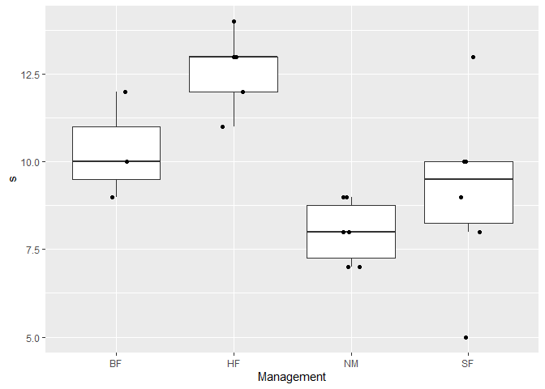
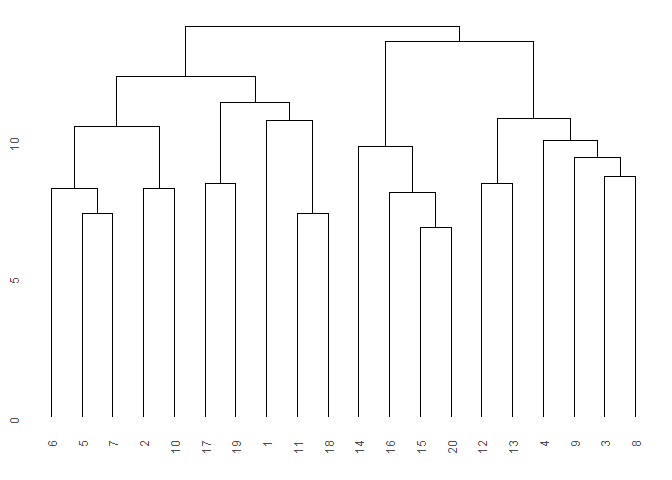
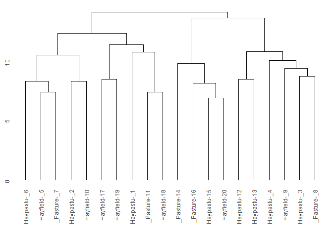
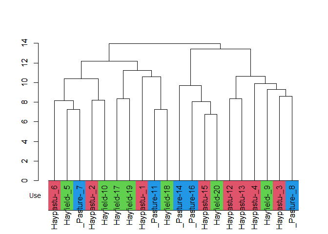
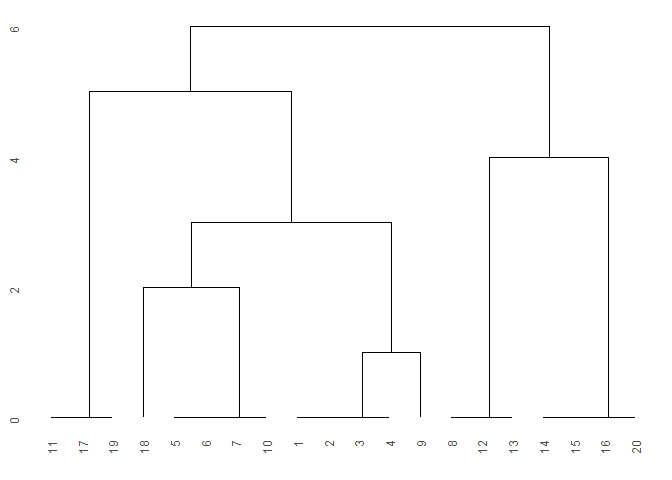
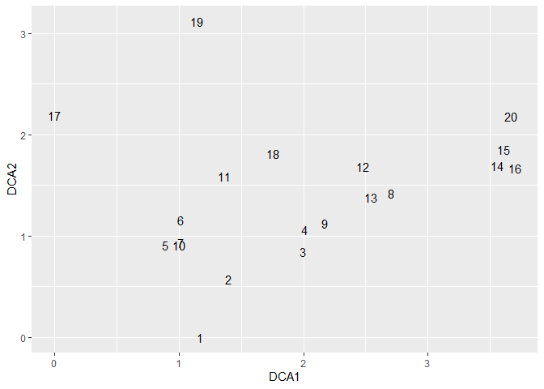
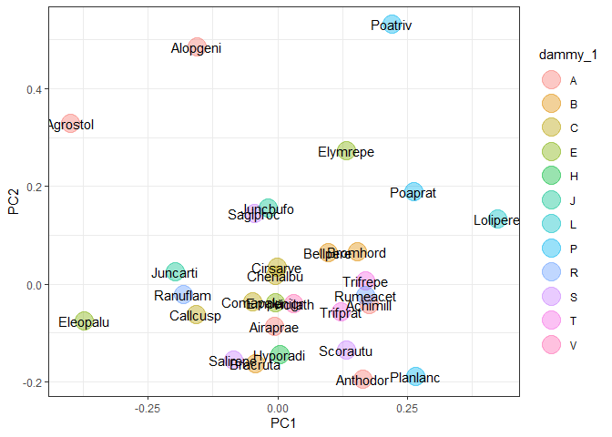

The goal of ecan is to support ecological analysis.
Installation
The released version is available on CRAN.
install.packages("ecan")The development version on GitHub (branch main) is ahead of the version on CRAN, so the two do not match. It already includes features that are not released yet, such as twinspan() and its helpers. Install it if you need them.
# install.packages("remotes")
remotes::install_github("matutosi/ecan")You can use almost the same functionality in shiny.
Example
You can read docs in https://matutosi.github.io/ecan/
Prepare and convert data
library(ecan)
library(vegan)
#> Loading required package: permute
library(dplyr)
#>
#> Attaching package: 'dplyr'
#> The following objects are masked from 'package:stats':
#>
#> filter, lag
#> The following objects are masked from 'package:base':
#>
#> intersect, setdiff, setequal, union
library(stringr)
library(tibble)
library(ggplot2)
data(dune)
data(dune.env)
df <-
table2df(dune) %>%
dplyr::left_join(tibble::rownames_to_column(dune.env, "stand"))
#> Joining with `by = join_by(stand)`
sp_dammy <-
tibble::tibble("species" = colnames(dune),
"dammy_1" = stringr::str_sub(colnames(dune), 1, 1),
"dammy_6" = stringr::str_sub(colnames(dune), 6, 6))
df <-
df %>%
dplyr::left_join(sp_dammy)
#> Joining with `by = join_by(species)`
df
#> # A tibble: 197 × 10
#> stand species abundance A1 Moisture Management Use Manure dammy_1
#> <chr> <chr> <dbl> <dbl> <ord> <fct> <ord> <ord> <chr>
#> 1 1 Achimill 1 2.8 1 SF Haypastu 4 A
#> 2 1 Elymrepe 4 2.8 1 SF Haypastu 4 E
#> 3 1 Lolipere 7 2.8 1 SF Haypastu 4 L
#> 4 1 Poaprat 4 2.8 1 SF Haypastu 4 P
#> 5 1 Poatriv 2 2.8 1 SF Haypastu 4 P
#> 6 2 Achimill 3 3.5 1 BF Haypastu 2 A
#> 7 2 Alopgeni 2 3.5 1 BF Haypastu 2 A
#> 8 2 Bellpere 3 3.5 1 BF Haypastu 2 B
#> 9 2 Bromhord 4 3.5 1 BF Haypastu 2 B
#> 10 2 Elymrepe 4 3.5 1 BF Haypastu 2 E
#> # ℹ 187 more rows
#> # ℹ 1 more variable: dammy_6 <chr>Diversity index
div <-
shdi(df) %>%
dplyr::left_join(select_one2multi(df, "stand"))
#> Joining with `by = join_by(stand)`
group <- "Management"
div_index <- "s"
div %>%
ggplot(aes(x = .data[[group]], y = .data[[div_index]])) +
geom_boxplot(outlier.shape = NA) + # do not show outer point
geom_jitter(height = 0, width = 0.1)
Indicator Species Analysis (ISA, ind val)
ind_val(df, group = "Moisture", row_data = TRUE)
#> $relfrq
#> 1 2 3 4
#> Achimill 0.7142857 0.50 0.0000000 0.0
#> Elymrepe 0.4285714 0.50 0.0000000 0.5
#> Lolipere 1.0000000 0.75 0.1428571 0.5
#> Poaprat 1.0000000 1.00 0.2857143 0.5
#> Poatriv 0.7142857 0.75 0.4285714 1.0
#> Alopgeni 0.1428571 0.50 0.4285714 1.0
#> Bellpere 0.4285714 0.75 0.0000000 0.0
#> Bromhord 0.4285714 0.50 0.0000000 0.0
#> Scorautu 0.8571429 1.00 0.8571429 1.0
#> Trifrepe 0.8571429 0.75 0.7142857 1.0
#> Agrostol 0.0000000 0.50 0.8571429 1.0
#> Bracruta 0.7142857 0.75 0.7142857 1.0
#> Cirsarve 0.0000000 0.25 0.0000000 0.0
#> Sagiproc 0.1428571 0.25 0.4285714 1.0
#> Anthodor 0.4285714 0.50 0.1428571 0.0
#> Planlanc 0.7142857 0.50 0.0000000 0.0
#> Rumeacet 0.4285714 0.00 0.0000000 1.0
#> Trifprat 0.4285714 0.00 0.0000000 0.0
#> Juncbufo 0.1428571 0.00 0.1428571 1.0
#> Eleopalu 0.0000000 0.00 0.7142857 0.0
#> Juncarti 0.0000000 0.00 0.5714286 0.5
#> Ranuflam 0.0000000 0.00 0.8571429 0.0
#> Vicilath 0.2857143 0.25 0.0000000 0.0
#> Hyporadi 0.1428571 0.25 0.1428571 0.0
#> Chenalbu 0.0000000 0.00 0.1428571 0.0
#> Comapalu 0.0000000 0.00 0.2857143 0.0
#> Callcusp 0.0000000 0.00 0.4285714 0.0
#> Airaprae 0.0000000 0.25 0.1428571 0.0
#> Salirepe 0.1428571 0.00 0.2857143 0.0
#> Empenigr 0.0000000 0.00 0.1428571 0.0
#>
#> $relabu
#> 1 2 3 4
#> Achimill 0.48780488 0.5121951 0.00000000 0.00000000
#> Elymrepe 0.25531915 0.2978723 0.00000000 0.44680851
#> Lolipere 0.46204620 0.3927393 0.05280528 0.09240924
#> Poaprat 0.35036496 0.3576642 0.08759124 0.20437956
#> Poatriv 0.24806202 0.2713178 0.15503876 0.32558140
#> Alopgeni 0.02846975 0.2241993 0.19928826 0.54804270
#> Bellpere 0.40000000 0.6000000 0.00000000 0.00000000
#> Bromhord 0.39506173 0.6049383 0.00000000 0.00000000
#> Scorautu 0.33922261 0.2226148 0.24028269 0.19787986
#> Trifrepe 0.27636364 0.2290909 0.18909091 0.30545455
#> Agrostol 0.00000000 0.2818792 0.38926174 0.32885906
#> Bracruta 0.29197080 0.1532847 0.24817518 0.30656934
#> Cirsarve 0.00000000 1.0000000 0.00000000 0.00000000
#> Sagiproc 0.05161290 0.2258065 0.18064516 0.54193548
#> Anthodor 0.33333333 0.5185185 0.14814815 0.00000000
#> Planlanc 0.70588235 0.2941176 0.00000000 0.00000000
#> Rumeacet 0.50000000 0.0000000 0.00000000 0.50000000
#> Trifprat 1.00000000 0.0000000 0.00000000 0.00000000
#> Juncbufo 0.06060606 0.0000000 0.09090909 0.84848485
#> Eleopalu 0.00000000 0.0000000 1.00000000 0.00000000
#> Juncarti 0.00000000 0.0000000 0.50000000 0.50000000
#> Ranuflam 0.00000000 0.0000000 1.00000000 0.00000000
#> Vicilath 0.63157895 0.3684211 0.00000000 0.00000000
#> Hyporadi 0.19047619 0.3333333 0.47619048 0.00000000
#> Chenalbu 0.00000000 0.0000000 1.00000000 0.00000000
#> Comapalu 0.00000000 0.0000000 1.00000000 0.00000000
#> Callcusp 0.00000000 0.0000000 1.00000000 0.00000000
#> Airaprae 0.00000000 0.5384615 0.46153846 0.00000000
#> Salirepe 0.27272727 0.0000000 0.72727273 0.00000000
#> Empenigr 0.00000000 0.0000000 1.00000000 0.00000000
#>
#> $indval
#> 1 2 3 4
#> Achimill 0.348432056 0.25609756 0.000000000 0.00000000
#> Elymrepe 0.109422492 0.14893617 0.000000000 0.22340426
#> Lolipere 0.462046205 0.29455446 0.007543612 0.04620462
#> Poaprat 0.350364964 0.35766423 0.025026069 0.10218978
#> Poatriv 0.177187154 0.20348837 0.066445183 0.32558140
#> Alopgeni 0.004067107 0.11209964 0.085409253 0.54804270
#> Bellpere 0.171428571 0.45000000 0.000000000 0.00000000
#> Bromhord 0.169312169 0.30246914 0.000000000 0.00000000
#> Scorautu 0.290762241 0.22261484 0.205956588 0.19787986
#> Trifrepe 0.236883117 0.17181818 0.135064935 0.30545455
#> Agrostol 0.000000000 0.14093960 0.333652924 0.32885906
#> Bracruta 0.208550574 0.11496350 0.177267987 0.30656934
#> Cirsarve 0.000000000 0.25000000 0.000000000 0.00000000
#> Sagiproc 0.007373272 0.05645161 0.077419355 0.54193548
#> Anthodor 0.142857143 0.25925926 0.021164021 0.00000000
#> Planlanc 0.504201681 0.14705882 0.000000000 0.00000000
#> Rumeacet 0.214285714 0.00000000 0.000000000 0.50000000
#> Trifprat 0.428571429 0.00000000 0.000000000 0.00000000
#> Juncbufo 0.008658009 0.00000000 0.012987013 0.84848485
#> Eleopalu 0.000000000 0.00000000 0.714285714 0.00000000
#> Juncarti 0.000000000 0.00000000 0.285714286 0.25000000
#> Ranuflam 0.000000000 0.00000000 0.857142857 0.00000000
#> Vicilath 0.180451128 0.09210526 0.000000000 0.00000000
#> Hyporadi 0.027210884 0.08333333 0.068027211 0.00000000
#> Chenalbu 0.000000000 0.00000000 0.142857143 0.00000000
#> Comapalu 0.000000000 0.00000000 0.285714286 0.00000000
#> Callcusp 0.000000000 0.00000000 0.428571429 0.00000000
#> Airaprae 0.000000000 0.13461538 0.065934066 0.00000000
#> Salirepe 0.038961039 0.00000000 0.207792208 0.00000000
#> Empenigr 0.000000000 0.00000000 0.142857143 0.00000000
#>
#> $maxcls
#> Achimill Elymrepe Lolipere Poaprat Poatriv Alopgeni Bellpere Bromhord
#> 1 4 1 2 4 4 2 2
#> Scorautu Trifrepe Agrostol Bracruta Cirsarve Sagiproc Anthodor Planlanc
#> 1 4 3 4 2 4 2 1
#> Rumeacet Trifprat Juncbufo Eleopalu Juncarti Ranuflam Vicilath Hyporadi
#> 4 1 4 3 3 3 1 2
#> Chenalbu Comapalu Callcusp Airaprae Salirepe Empenigr
#> 3 3 3 2 3 3
#>
#> $indcls
#> Achimill Elymrepe Lolipere Poaprat Poatriv Alopgeni Bellpere
#> 0.34843206 0.22340426 0.46204620 0.35766423 0.32558140 0.54804270 0.45000000
#> Bromhord Scorautu Trifrepe Agrostol Bracruta Cirsarve Sagiproc
#> 0.30246914 0.29076224 0.30545455 0.33365292 0.30656934 0.25000000 0.54193548
#> Anthodor Planlanc Rumeacet Trifprat Juncbufo Eleopalu Juncarti
#> 0.25925926 0.50420168 0.50000000 0.42857143 0.84848485 0.71428571 0.28571429
#> Ranuflam Vicilath Hyporadi Chenalbu Comapalu Callcusp Airaprae
#> 0.85714286 0.18045113 0.08333333 0.14285714 0.28571429 0.42857143 0.13461538
#> Salirepe Empenigr
#> 0.20779221 0.14285714
#>
#> $pval
#> Achimill Elymrepe Lolipere Poaprat Poatriv Alopgeni Bellpere Bromhord
#> 0.264 0.441 0.076 0.344 0.512 0.059 0.110 0.198
#> Scorautu Trifrepe Agrostol Bracruta Cirsarve Sagiproc Anthodor Planlanc
#> 0.823 0.676 0.366 0.613 0.300 0.073 0.326 0.096
#> Rumeacet Trifprat Juncbufo Eleopalu Juncarti Ranuflam Vicilath Hyporadi
#> 0.093 0.136 0.002 0.023 0.206 0.002 0.703 1.000
#> Chenalbu Comapalu Callcusp Airaprae Salirepe Empenigr
#> 1.000 0.437 0.078 0.752 0.600 1.000
#>
#> $error
#> [1] 0
#>
#> attr(,"class")
#> [1] "indval"
ind_val(df, group = "Management")
#> Joining with `by = join_by(numeric_Management)`
#> # A tibble: 30 × 4
#> Management species ind.val p.value
#> <fct> <chr> <dbl> <dbl>
#> 1 SF Alopgeni 0.547 0.036
#> 2 SF Agrostol 0.472 0.063
#> 3 SF Sagiproc 0.241 0.525
#> 4 SF Elymrepe 0.188 0.703
#> 5 SF Cirsarve 0.167 1
#> 6 SF Chenalbu 0.167 1
#> 7 BF Vicilath 0.571 0.034
#> 8 BF Lolipere 0.45 0.071
#> 9 BF Bromhord 0.448 0.046
#> 10 BF Trifrepe 0.439 0.065
#> # ℹ 20 more rows
ind_val(df, group = "Use")
#> Joining with `by = join_by(numeric_Use)`
#> # A tibble: 30 × 4
#> Use species ind.val p.value
#> <ord> <chr> <dbl> <dbl>
#> 1 Haypastu Poatriv 0.451 0.116
#> 2 Haypastu Alopgeni 0.359 0.201
#> 3 Haypastu Elymrepe 0.292 0.314
#> 4 Haypastu Poaprat 0.288 0.819
#> 5 Haypastu Agrostol 0.269 0.587
#> 6 Haypastu Lolipere 0.259 0.801
#> 7 Haypastu Sagiproc 0.178 0.799
#> 8 Haypastu Cirsarve 0.125 1
#> 9 Haypastu Chenalbu 0.125 1
#> 10 Haypastu Juncbufo 0.118 0.834
#> # ℹ 20 more rows
ind_val(df, group = "Manure")
#> Joining with `by = join_by(numeric_Manure)`
#> # A tibble: 30 × 4
#> Manure species ind.val p.value
#> <ord> <chr> <dbl> <dbl>
#> 1 4 Elymrepe 0.5 0.039
#> 2 4 Lolipere 0.351 0.194
#> 3 4 Cirsarve 0.333 0.294
#> 4 4 Poaprat 0.315 0.279
#> 5 4 Bellpere 0.248 0.474
#> 6 2 Rumeacet 0.522 0.038
#> 7 2 Trifprat 0.389 0.165
#> 8 2 Achimill 0.309 0.278
#> 9 2 Poatriv 0.299 0.432
#> 10 2 Anthodor 0.178 0.761
#> # ℹ 20 more rowsCluster analysis
library(ggdendro)
library(dendextend)
#> Registered S3 method overwritten by 'dendextend':
#> method from
#> rev.hclust vegan
#>
#> ---------------------
#> Welcome to dendextend version 1.19.1
#> Type citation('dendextend') for how to cite the package.
#>
#> Type browseVignettes(package = 'dendextend') for the package vignette.
#> The github page is: https://github.com/talgalili/dendextend/
#>
#> Suggestions and bug-reports can be submitted at: https://github.com/talgalili/dendextend/issues
#> You may ask questions at stackoverflow, use the r and dendextend tags:
#> https://stackoverflow.com/questions/tagged/dendextend
#>
#> To suppress this message use: suppressPackageStartupMessages(library(dendextend))
#> ---------------------
#>
#> Attaching package: 'dendextend'
#> The following object is masked from 'package:ggdendro':
#>
#> theme_dendro
#> The following object is masked from 'package:permute':
#>
#> shuffle
#> The following object is masked from 'package:stats':
#>
#> cutree
cls <- cluster(dune, c_method = "average", d_method = "euclidean")
ggdendro::ggdendrogram(cls)
indiv <- "stand"
group <- "Use"
ggdendro::ggdendrogram(cls_add_group(cls, df, indiv, group))
#> Joining with `by = join_by(stand)`
col <- cls_color(cls, df, indiv, group)
#> Joining with `by = join_by(stand)`
#> Joining with `by = join_by(Use)`
cls <-
cls_add_group(cls, df, indiv, group) %>%
stats::as.dendrogram()
#> Joining with `by = join_by(stand)`
labels_colors(cls) <- gray(0)
plot(cls)
dendextend::colored_bars(colors = col, cls, group, y_shift = 0, y_scale = 3)
par(new = TRUE)
plot(cls)
TWINSPAN
twinspan() is a native R implementation of TWINSPAN (Hill 1979) and of the modified TWINSPAN of Roleček et al. (2009). It needs no compiler, but it is not a port of Hill’s original FORTRAN program: see ?twinspan for the known differences.
tw <- twinspan(dune)
tw
#> TWINSPAN
#> stands: 20
#> pseudospecies: 75
#> cut levels: 0 2 5 10 20
#> divisions: 6
#> groups: 7
#>
#> division 1 at level 0 (n = 20, eig = 0.511)
#> indicators: Ranuflam_1(+) Agrostol_1(+) Eleopalu_1(+) Lolipere_1(-)
#> division 2 at level 1 (n = 13, eig = 0.384)
#> indicators: Hyporadi_1(-)
#> division 3 at level 1 (n = 7, eig = 0.411)
#> indicators: Sagiproc_1(-)
#> division 4 at level 2 (n = 10, eig = 0.317)
#> indicators: Planlanc_1(-)
#> division 5 at level 3 (n = 5, eig = 0.284)
#> indicators: Achimill_1(+)
#> division 6 at level 3 (n = 5, eig = 0.301)
#> indicators: Juncarti_1(+)
head(tw$classification)
#> # A tibble: 6 × 4
#> stand group path depth
#> <chr> <int> <chr> <int>
#> 1 11 1 00 2
#> 2 17 1 00 2
#> 3 19 1 00 2
#> 4 18 2 0100 4
#> 5 5 3 0101 4
#> 6 6 3 0101 4
# the division tree works with the clustering helpers of ecan
ggdendro::ggdendrogram(stats::as.hclust(tw))
The modified TWINSPAN divides the most heterogeneous group first, so that the number of groups can be chosen directly.
tw_mod <- twinspan(dune, modified = TRUE, n_clusters = 4)
table(tw_mod$classification$group)
#>
#> 1 2 3 4
#> 3 10 3 4tw_two_way() arranges the stands and the species by their divisions. The digits below the table show the dichotomy of each stand.
tw_two_way(tw)
#> 11115671123498111112
#> 1798 0 234560
#> Cirsarve -----------2-------- 0000
#> Elymrepe ----2---22223------- 0000
#> Bellpere ---22--2-222-------- 0001
#> Bromhord ----2-22-2-2-------- 0001
#> Trifprat ----232------------- 0001
#> Airaprae -22----------------- 00100
#> Empenigr --2----------------- 00100
#> Hyporadi 223----------------- 00100
#> Vicilath 2--1---1------------ 00100
#> Achimill -2--222212---------- 00101
#> Anthodor -22-2222------------ 00101
#> Planlanc 22-23332------------ 00101
#> Lolipere 3--22333333322------ 0011
#> Poaprat 21-22222223222-2---- 0011
#> Rumeacet ----332-----2-2----- 0011
#> Bracruta 2-232322--22222--222 01
#> Poatriv ----323223333223--2- 01
#> Scorautu 32332222-322222222-2 01
#> Trifrepe 2-222323-321222231-- 01
#> Sagiproc 2-2--------32222---- 100
#> Salirepe --22---------------3 100
#> Agrostol ----------2322232233 101
#> Alopgeni ---------2322333--2- 101
#> Juncbufo ------2-----2-22---- 101
#> Ranuflam -------------2-22222 1100
#> Callcusp ----------------2-22 1101
#> Comapalu ----------------22-- 1101
#> Eleopalu -------------2--2332 1101
#> Juncarti ------------22---222 1101
#> Chenalbu ---------------1---- 111
#>
#> 00000000000001111111
#> 00011111111110001111
#> 0000011111
#> 0111100001Ordination
ord_dca <- ordination(dune, o_method = "dca")
ord_pca <-
df %>%
df2table() %>%
ordination(o_method = "pca")
ord_dca_st <-
ord_extract_score(ord_dca, score = "st_scores")
ord_dca_st %>%
ggplot(aes(DCA1, DCA2, label = rownames(.))) +
geom_text()
indiv <- "species"
group <- "dammy_1"
ord_pca_sp <-
ord_add_group(ord_pca, score = "sp_scores", df, indiv, group)
#> Joining with `by = join_by(species)`
ord_pca_sp %>%
ggplot(aes(PC1, PC2, label = rownames(.))) +
geom_point(aes(col = .data[[group]]), alpha = 0.4, size = 7) +
geom_text() +
theme_bw()
Citation
Toshikazu Matsumura (2022) Ecological analysis tools with R. https://github.com/matutosi/ecan/.